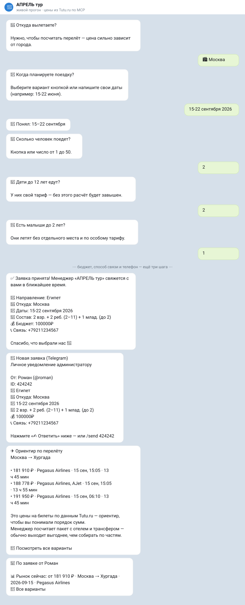

💬
Откройте TurBot
Запустите диалог в Telegram или VK и нажмите «Начать».
Напишите TurBot в Telegram или VK, ответьте на 3 простых вопроса — менеджер получит готовую заявку и подберёт варианты под ваш бюджет.
Запустите диалог в Telegram или VK и нажмите «Начать».
Куда хотите, когда летите и какой бюджет планируете.
Менеджер получает структурированную заявку и предлагает туры.
TurBot собирает ключевые пожелания заранее, чтобы менеджер сразу искал подходящие варианты.
Ответьте на несколько вопросов. В конце сайт сформирует готовый текст заявки, который можно отправить менеджеру в VK или через Telegram.
Вертикальный сценарий можно использовать как VK Клип или Reels и вести трафик прямо на этот лендинг.
Запустить подбор
Заполните заявку за пару минут и передайте менеджеру всё нужное для подбора.